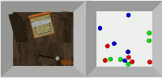

|
I have been a Ph.D. student since 2021 in the School of Computer Science at Peking University, advised by Prof. Hao Dong. I received my bachelor degree in 2021, from Turing Class in Peking University. My research interest lies in robot learning, generative models, and reinforcement learning. I aim to build intelligent embodied agents that automatically discover and perform tasks without human specification<\b> . |

|
Hai Ci, Mingdong Wu, Wentao Zhu, Xiaoxuan Ma, Hao Dong, Fangwei Zhong, Yizhou Wang, CVPR, 2023 paper link / project page / bibtex GFPose is a unified 3D human pose prior model that can be easily used for various applications, e.g., 3D human pose estimation, pose denoising and generation. Our key idea is to estimate the gradient field (a.k.a, score) of the perturbed human pose. We can leverage the gradient to adjust poses to be more plausible and feasible to a task specification. |
|

|
Mingdong Wu, Fangwei Zhong, Yulong Xia, Hao Dong. NeurIPS, 2022 paper link / project page / bibtex We study object rearrangement without explicit goal specification. The agent is given examples from a target distribution and aims at rearranging objects to increase the likelihood of the distribution. Our key idea is to learn a target gradient field that indicates the fastest direction to increase the likelihood from examples via score-matching. |